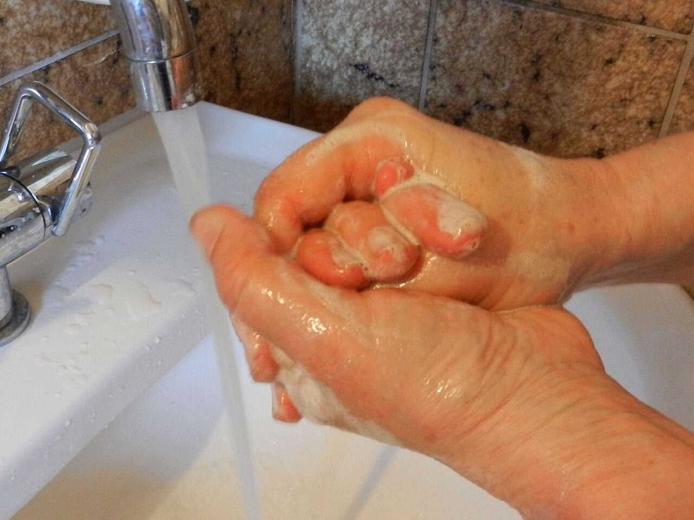
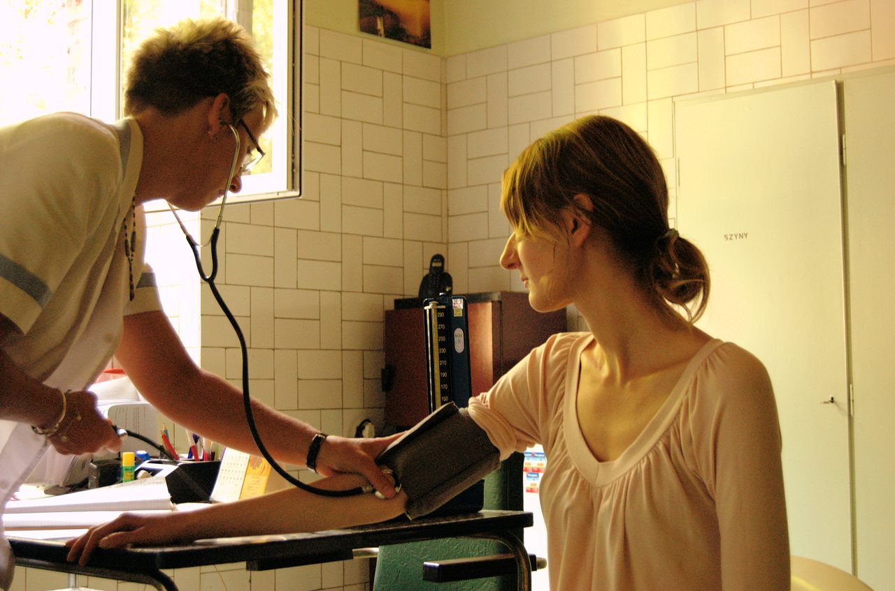

Waktu penting mencuci tangan
- Sebelum makan dan menyiapkan makanan
- Setelah menggunakan toilet
- Setelah membuang sampah atau bersin
- Setelah dari tempat umum dan transportasi
Sebagian besar penyakit menular bisa dicegah dengan kebersihan dan imunisasi, sedangkan penyakit tidak menular dicegah dengan mengendalikan faktor risiko. Halaman ini merangkum keduanya dengan langkah yang bisa langsung dipraktikkan.
Penyakit menular seperti diare, influenza, tuberkulosis, dan demam berdarah menyebar melalui kuman, air, udara, atau hewan perantara. Pencegahannya bertumpu pada kebersihan, sanitasi, dan kekebalan tubuh melalui imunisasi.
Penyakit tidak menular seperti jantung, diabetes, dan hipertensi tidak menular antarmanusia. Pencegahannya bertumpu pada pengendalian faktor risiko: tekanan darah, gula darah, berat badan, rokok, dan kurang gerak.
WHO mencatat penyakit tidak menular menyebabkan setidaknya 43 juta kematian pada 2021, sekitar 75% dari seluruh kematian yang bukan akibat pandemi. Sebanyak 18 juta di antaranya terjadi sebelum usia 70 tahun.

Durasi yang dianjurkan sekitar 40–60 detik dengan air mengalir dan sabun. Enam langkah berikut memastikan seluruh bagian tangan terlepas dari kuman.
Sumber: Kementerian Kesehatan RI (6 langkah cuci tangan pakai sabun) dan WHO (durasi cuci tangan 40–60 detik).
Kebersihan bukan soal takut kuman, tapi soal mengurangi peluang kuman masuk ke tubuh lewat jalur yang paling sering: tangan, makanan, dan air.
Imunisasi melatih sistem kekebalan tubuh mengenali kuman sebelum infeksi sungguhan terjadi. Kementerian Kesehatan RI menganjurkan imunisasi rutin lengkap, terdiri dari imunisasi dasar dan lanjutan.
| Usia | Jenis imunisasi |
|---|---|
| Kurang dari 24 jam | Hepatitis B (HB-0) |
| Kurang dari 1 bulan | BCG, OPV 1 |
| 2 bulan | DPT-HB-Hib 1, OPV 2, PCV 1, RV 1 |
| 3 bulan | DPT-HB-Hib 2, OPV 3, PCV 2, RV 2 |
| 4 bulan | DPT-HB-Hib 3, OPV 4, IPV 1, RV 3 |
| 9 bulan | Campak-Rubella, IPV 2 |
| 12 bulan | PCV 3 |
| 18 bulan | Campak-Rubella 2, DPT-HB-Hib 4 |
| Kelas 1 SD | Campak-Rubella, DT |
| Kelas 2 SD | Td |
| Kelas 5 & 6 SD | Td dan HPV (khusus anak perempuan) |
Sumber: Kementerian Kesehatan RI, artikel Pekan Imunisasi Dunia 2025. Jadwal dapat menyesuaikan kondisi anak dan kebijakan daerah.
Karena penyebabnya bertumpu pada faktor risiko, pencegahan penyakit tidak menular sebenarnya bisa diukur. WHO menyebut sebagian besar kematian dini akibat penyakit tidak menular dapat dicegah melalui perubahan perilaku dan pemeriksaan rutin.
Hipertensi sering tanpa gejala. Banyak orang baru tahu tekanan darahnya tinggi setelah terjadi komplikasi. Karena itu pengukuran rutin lebih penting daripada menunggu keluhan.

Rokok membunuh lebih dari 8 juta orang setiap tahun di dunia, termasuk sekitar 1,2 juta bukan perokok yang terpapar asap. Di Indonesia, rokok menjadi salah satu faktor risiko utama penyakit jantung, stroke, kanker paru, dan gangguan pernapasan kronis.
Kabar baiknya, manfaat berhenti merokok mulai terasa dalam hitungan jam sampai minggu: tekanan darah dan denyut nadi menurun, fungsi paru membaik, dan risiko jangka panjang menurun terus seiring waktu.
Perlu. Kuman penyebab penyakit tetap beredar meski lingkungan tampak bersih, dan sebagian penyakit bisa menular sebelum gejalanya muncul. Imunisasi memberi perlindungan jangka panjang yang tidak bergantung pada kebersihan sesaat.
Sabun berperan mengangkat lemak dan kotoran yang menempelkan kuman pada kulit. Air saja tidak cukup efektif, terutama setelah dari toilet atau sebelum makan.
Untuk orang dewasa tanpa faktor risiko, minimal setahun sekali. Bila ada riwayat hipertensi dalam keluarga, obesitas, atau kebiasaan merokok, pemeriksaan perlu lebih sering sesuai anjuran tenaga kesehatan.
Vape bukan produk bebas risiko. WHO menegaskan produk tembakau dan nikotin, termasuk rokok elektronik, sama-sama berbahaya dan tidak dianjurkan sebagai bentuk penghentian tanpa pendampingan profesional.
Tidak. Antibiotik hanya untuk infeksi bakteri, bukan virus seperti flu biasa. Penggunaan tanpa indikasi mendorong resistensi antibiotik, yang kini menjadi ancaman kesehatan global.
Cuci tangan sebelum makan, cek tekanan darah setahun sekali, dan hindari asap rokok. Tiga hal sederhana yang mencegah penyakit jauh lebih mahal untuk diobati.